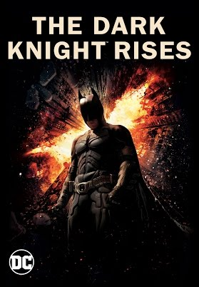
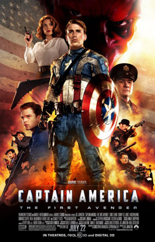
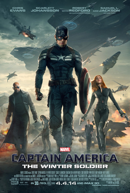
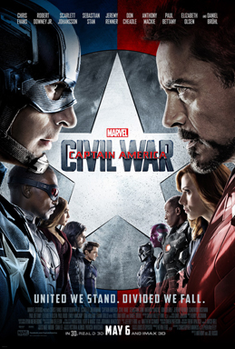
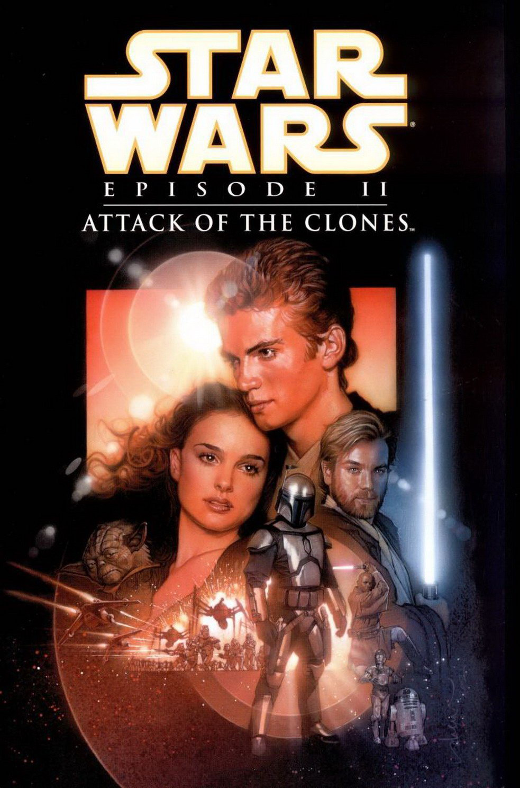
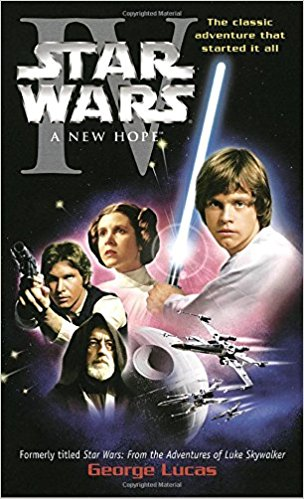
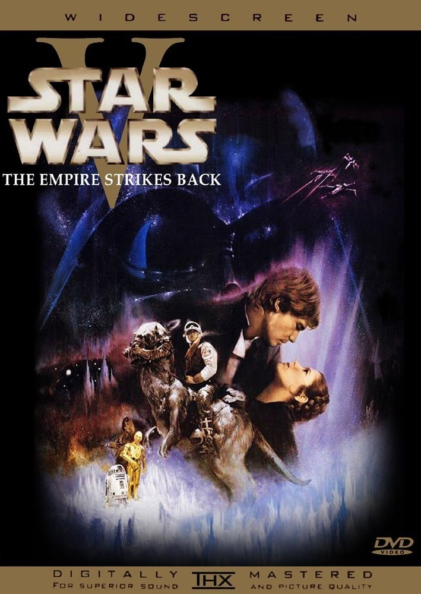
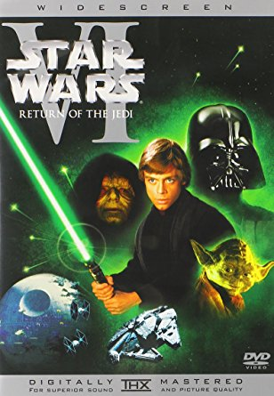
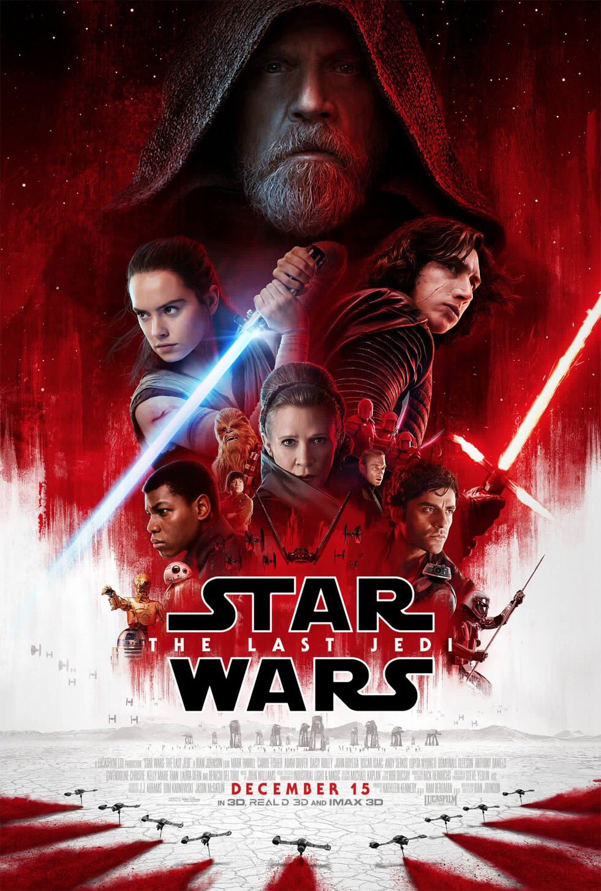

Batman

Batman Begins
Nueva adaptación del famoso cómic. Narra los orígenes de la leyenda de Batman y los motivos que lo convirtieron en el representante del Bien en la ciudad de Gotham. Bruce Wayne vive obsesionado con el recuerdo de sus padres, muertos a tiros en su presencia. Atormentado por el dolor, se va de Gotham y recorre el mundo hasta que encuentra a un extraño personaje que lo adiestra en todas las disciplinas físicas y mentales que le servirán para combatir el Mal. Por esta razón, la Liga de las Sombras, una poderosa y subversiva sociedad secreta, dirigida por el enigmático Ra's Al Ghul, intenta reclutarlo. Cuando Bruce vuelve a Gotham, la ciudad está dominada por el crimen y la corrupción. Con la ayuda de su leal mayordomo Alfred, del detective de la policía Jim Gordon y de Lucius Fox, su colega en una Sociedad de Ciencias Aplicadas, Wayne libera a su alter ego: Batman, un justiciero enmascarado que utiliza la fuerza, la inteligencia y la más alta tecnología para luchar contra las siniestras fuerzas que amenazan con destruir la ciudad.
Información obtenida vía FILMAFFINITY.

Batman The Dark Knight
Batman/Bruce Wayne (Christian Bale) regresa para continuar su guerra contra el crimen. Con la ayuda del teniente Jim Gordon (Gary Oldman) y del Fiscal del Distrito Harvey Dent (Aaron Eckhart), Batman se propone destruir el crimen organizado en la ciudad de Gotham. El triunvirato demuestra su eficacia, pero, de repente, aparece Joker (Heath Ledger), un nuevo criminal que desencadena el caos y tiene aterrados a los ciudadanos.
Información obtenida vía FILMAFFINITY.

Batman The Dark Knight Rises
Hace ocho años que Batman desapareció, dejando de ser un héroe para convertirse en un fugitivo. Al asumir la culpa por la muerte del fiscal del distrito Harvey Dent, el Caballero Oscuro decidió sacrificarlo todo por lo que consideraba, al igual que el Comisario Gordon, un bien mayor. La mentira funciona durante un tiempo, ya que la actividad criminal de la ciudad de Gotham se ve aplacada gracias a la dura Ley Dent. Pero todo cambia con la llegada de una astuta gata ladrona que pretende llevar a cabo un misterioso plan. Sin embargo, mucho más peligrosa es la aparición en escena de Bane, un terrorista enmascarado cuyos despiadados planes obligan a Bruce a regresar de su voluntario exilio.
Información obtenida vía FILMAFFINITY.
Capitán América

Captain America: The First Avenger
Nacido durante la Gran Depresión (años 30), Steve Rogers creció como un chico enclenque en una familia pobre. Horrorizado por las noticias que llegaban de Europa sobre los nazis, decidió enrolarse en el ejército; sin embargo, debido a su precaria salud, fue rechazado una y otra vez. Enternecido por sus súplicas, el General Chester Phillips le ofreció la oportunidad de participar en un experimento especial: la "Operación Renacimiento". Tras administrarle el “Suero Super-Soldado” y bombardearlo con “vitarrayos”, el cuerpo de Steve se hace perfecto. A continuación, se sometió a un intensivo programa de entrenamiento físico y táctico. Tres meses después, le encomendaron su primera misión como Capitán América. Armado con un escudo indestructible, emprenderá la guerra contra el Mal como centinela de la libertad y líder de los Vengadores.
Información obtenida vía FILMAFFINITY.

Captain America: The Winter Soldier
Tras los devastadores acontecimientos acaecidos en Nueva York con Los Vengadores, Steve Rogers, alias el Capitán América, vive tranquilamente en Washington D.C. intentando adaptarse al mundo moderno. Pero cuando atacan a un colega de S.H.I.E.L.D., Steve se ve envuelto en una trama de intrigas que representa una amenaza para el mundo. Se unirá entonces a la Viuda Negra para desenmascarar a los conspiradores. Cuando por fin descubren la magnitud de la trama, se unirá a ellos el Halcón. Los tres tendrán que enfrentarse a un enemigo inesperado y extraordinario: el Soldado de Invierno.
Información obtenida vía FILMAFFINITY.

Captain America: Civl War
Después de que otro incidente internacional involucre a Los Vengadores, causando varios daños colaterales, aumentan las presiones políticas para instaurar un sistema que exija más responsabilidades y que determine cuándo deben contratar los servicios del grupo de superhéroes. Esta nueva situación dividirá a Los Vengadores, mientras intentan proteger al mundo de un nuevo y terrible villano. Tercera entrega de la saga Capitán América.
Información obtenida vía FILMAFFINITY.
Iron Man

Iron Man
El multimillonario fabricante de armas Tony Stark (Robert Downey Jr.) debe enfrentarse a su turbio pasado después de sufrir un accidente con una de sus armas. Equipado con una armadura de última generación tecnológica, se convierte en "El hombre de hierro", un héroe que se dedica a combatir el mal en todo el mundo.
Información obtenida vía FILMAFFINITY.

Iron Man 2
El mundo ya sabe que el multimillonario Tony Stark (Robert Downey Jr.) es Iron Man, el superhéroe enmascarado. A pesar de las presiones del gobierno, la prensa y la opinión pública para que comparta su tecnología con el ejército, Tony es reacio a desvelar los secretos de la armadura de Iron Man, porque teme que esa información caiga en en manos de irresponsables. Con Pepper Potts (Gwyneth Paltrow) y James “Rhodey” Rhodes (Don Cheadle) a su lado, Tony forja alianzas nuevas y se enfrenta a nuevas y poderosas fuerzas.
Información obtenida vía FILMAFFINITY.

Iron Man 3
El descarado y brillante empresario Tony Stark/Iron Man se enfrentará a un enemigo cuyo poder no conoce límites. Cuando Stark comprende que su enemigo ha destruido su universo personal, se embarca en una angustiosa búsqueda para encontrar a los responsables. Este viaje pondrá a prueba su entereza una y otra vez. Acorralado, Stark tendrá que sobrevivir por sus propios medios, confiando en su ingenio y su instinto para proteger a las personas que quiere.
Información obtenida vía FILMAFFINITY.
Star Wars

Episode I: The Phantom Menace
Ambientada treinta años antes que "La guerra de las galaxias" (1977), muestra la infancia de Darth Vader, el pasado de Obi-Wan Kenobi y el resurgimiento de los Sith, los caballeros Jedi dominados por el Lado Oscuro. La Federación de Comercio ha bloqueado el pequeño planeta de Naboo, gobernado por la joven Reina Amidala; se trata de un plan ideado por Sith Darth Sidious, que, manteniéndose en el anonimato, dirige a los neimoidianos, que están al mando de la Federación. El Jedi Qui-Gon Jinn y su aprendiz Obi-Wan Kenobi convencen a Amidala para que vaya a Coruscant, la capital de la República y sede del Consejo Jedi, y trate de neutralizar esta amenaza. Pero, al intentar esquivar el bloqueo, la nave real resulta averiada, viéndose así obligada la tripulación a aterrizar en el desértico y remoto planeta de Tatooine.
Información obtenida vía FILMAFFINITY.

Episode II: Attack of the Clones
Corren tenebrosos tiempos para la República, que continúa envuelta en luchas y sumida en el caos. Un movimiento separatista, formado por centenares de planetas y poderosas alianzas encabezadas por el misterioso conde Dooku, amenaza la galaxia. Ni siquiera los Jedi parecen capaces de conjurar el peligro. Este movimiento provoca el estallido de las guerras clones, que representa el principio del fin de la República. Para allanar el camino, los separatistas intentan asesinar a la senadora Padme Amidala. Para evitar futuros atentados, su seguridad es encomendada a dos caballeros Jedi.
Información obtenida vía FILMAFFINITY.

Episode III: Revenge of the Sith
Último capítulo de la trilogía de precuelas de Star Wars, en el que Anakin Skywalker definitivamente se pasa al lado oscuro. En el Episodio III aparece el General Grievous, un ser implacable mitad-alien mitad-robot, el líder del ejército separatista Droid. Los Sith son los amos del lado oscuro de la Fuerza y los enemigos de los Jedi. Fueron prácticamente exterminados por los Jedi hace mil años, pero esta orden del mal sobrevivió en la clandestinidad.
Información obtenida vía FILMAFFINITY.

Episode IV: A New Hope
La princesa Leia, líder del movimiento rebelde que desea reinstaurar la República en la galaxia en los tiempos ominosos del Imperio, es capturada por las Fuerzas Imperiales, capitaneadas por el implacable Darth Vader, el sirviente más fiel del Emperador. El intrépido y joven Luke Skywalker, ayudado por Han Solo, capitán de la nave espacial "El Halcón Milenario", y los androides, R2D2 y C3PO, serán los encargados de luchar contra el enemigo e intentar rescatar a la princesa para volver a instaurar la justicia en el seno de la galaxia.
Información obtenida vía FILMAFFINITY.

Episode V: The Empire Strikes Back
Tras un ataque sorpresa de las tropas imperiales a las bases camufladas de la alianza rebelde, Luke Skywalker, en compañía de R2D2, parte hacia el planeta Dagobah en busca de Yoda, el último maestro Jedi, para que le enseñe los secretos de la Fuerza. Mientras, Han Solo, la princesa Leia, Chewbacca, y C3PO esquivan a las fuerzas imperiales y piden refugio al antiguo propietario del Halcón Milenario, Lando Calrissian, en la ciudad minera de Bespin, donde les prepara una trampa urdida por Darth Vader.
Información obtenida vía FILMAFFINITY.

Episode VI: Return of the Jedi
Para ir a Tatooine y liberar a Han Solo, Luke Skywalker y la princesa Leia deben infiltrarse en la peligrosa guarida de Jabba the Hutt, el gángster más temido de la galaxia. Una vez reunidos, el equipo recluta a tribus de Ewoks para combatir a las fuerzas imperiales en los bosques de la luna de Endor. Mientras tanto, el Emperador y Darth Vader conspiran para atraer a Luke al lado oscuro, pero el joven está decidido a reavivar el espíritu del Jedi en su padre. La guerra civil galáctica termina con un último enfrentamiento entre las fuerzas rebeldes unificadas y una segunda Estrella de la Muerte, indefensa e incompleta, en una batalla que decidirá el destino de la galaxia.
Información obtenida vía FILMAFFINITY.

Episode VII: The Force Awakens
Treinta años después de la victoria de la Alianza Rebelde sobre la segunda Estrella de la Muerte (hechos narrados en el Episodio VI: El retorno del Jedi), la galaxia está todavía en guerra. Una nueva República se ha constituido, pero una siniestra organización, la Primera Orden, ha resurgido de las cenizas del Imperio Galáctico. A los héroes de antaño, que luchan ahora en la Resistencia, se suman nuevos héroes: Poe Dameron, un piloto de caza, Finn, un soldado desertor de la Primera Orden, Rey, una joven chatarrera, y BB-8, un androide rodante. Todos ellos luchan contra las fuerzas del Mal: el Capitán Phasma, de la Primera Orden, y Kylo Ren, un temible y misterioso personaje que empuña un sable de luz roja.
Información obtenida vía FILMAFFINITY.

Episode VII: The Last Jedi
La malvada Primera Orden se ha vuelto más poderosa tras 'El despertar de la fuerza' y tiene contra las cuerdas a la Resistencia liderada por la General Leia Organa (Carrie Fisher). El piloto Poe Dameron (Oscar Isaac) lidera una misión para destruir un acorazado de la Primera Orden. Mientras tanto, Rey (Daisy Ridley) tendrá que definir su futuro y su vocación, y Luke (Mark Hamill) revaluar el significado de su vida.
Información obtenida vía FILMAFFINITY.

Rogue One: A Star Wars Story
El Imperio Galáctico ha terminado de construir el arma más poderosa de todas, la Estrella de la muerte, pero un grupo de rebeldes decide realizar una misión de muy alto riesgo: robar los planos de dicha estación antes de que entre en operaciones, mientras se enfrentan también al poderoso Lord Sith conocido como Darth Vader, discípulo del despiadado Emperador Palpatine. Film ambientado entre los episodios III y IV de Star Wars.
Información obtenida vía FILMAFFINITY.